The simplest way to enter Edit Mode is to point the cursor at a note or other item and click the left mouse button. When this is done the indicated item will turn red. See the section on mouse usage for more information. Below are listed the typed commands to enter Edit Mode:
I n -- where If no number is given,
n will be assumed to be the last item edited or entered on the page. Hitting
ST x n1, n2, n3 -- where Editing will begin with the first item with any of the Code numbers
n1, n2, or n3 found on Staff
Add 1000 to x to edit on all staves up from staff x.
Example: ST 1008 3 17
This will look at all Code 3 and Code 17
items found on staff 8 and above.
STX n1, n2, n3.
Editing will begin with the first item with any of the Code numbers
ED pos, x, n1, n2, n3
This allows you to edit at position pos, staff x, up to 3 different code numbers. A vertical line of dots will appear at the position given and all items within 5 spaces of the line on that staff will come up for editing. To pass over an item type <enter>.
If 1000 is added to
x, editing will begin on staff x and continue on up. If code numbers are given, the item
nearest the line with that number will come up. Following that, all other items with that code number near the vertical
line will come up for editing.
Example: ED 70 1008 3 17
This will look at all Code 3 and Code 17 items
found near position 70 on staff 8 and above.
Typing ED alone, or with pos as zero, assumes the position of the last item edited or entered. If the staff number x = 0, items on all staves are considered. If n1 = 0, or omitted, all Code numbers are considered.
BB -- view the bounding box. (for PostScript applications.)
After typing BB, the following dialog box appears.
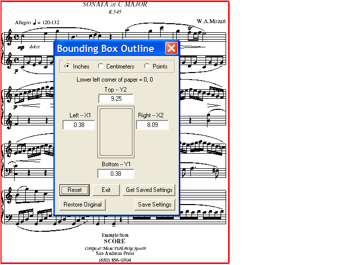
PATH -- set the path to the proper folder (directory) for using SCORE's Get and Save commands.
For example, if you type PATH MUSDAT, then "\MUSDAT" will appear in the large gray box and any Get or Save commands will refer to that folder.
PATHX -- get the Path List dialog.
It is easy to create a list of frequently-used directories for
quick access. If you click on 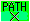
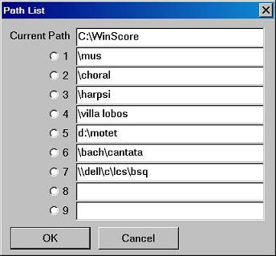
You may type the various directory names you will be using into the numbered spaces. To access any of these paths, bring up this box again, with , <ctrl>0, etc., and click on the appropriate button. Or, without bringing up the dialog box, the path names in the list may be activated by typing <ctrl>n, where n is the appropriate list number. The path name should then appear at the top of the screen, to the left.
Commands while in Edit Mode
Changing Parameters by Number
All SCORE Items are stored in a list of parameters. The location and appearance of any item is changed when the proper parameter values are changed. When any Item is in Edit Mode, its current parameter list will appear at the top of the screen. Parameters are changed by typing pairs of numbers: p v, where p is the parameter to be changed and v is the new value to be entered. Several pairs of numbers may be typed on a single line.
Typing -p alone will change the sign of parameter p. i.e. If P7 = 3.46, typing -7 will cause P7 = -3.46. Typing -7 again will change it back to positive.
While editing, the values of parameters 1 through 20 will appear in boxes at the top of the screen. To see values of parameters 21 through 30, type PM. If you have made several changes to a parameter, you may see its original value by typing PM n, where n is the parameter number involved. The lower boxes will show the current values and the upper boxes will show the original values.
Relative Parameter Changes
The process described above involves absolute parameter changes. Relative changes are made by adding two zeros to the parameter number (the first number of a pair). Thus, typing 600 5 causes 5 to be added to the original value in P6. (This is equivalent to the programming statement, P6 = P6 + 5.)
Typing /6 5 is the same as typing 600 5.
Parameter Transfer
Adding four zeros to the parameter number (the first number of a pair) causes the parameter to pick up the value in the parameter indicated by the second number of the pair. Typing 50000 4 causes the current value of P4 to be put into P5. (This is the same as saying P5 = P4.)
Typing //5 4 is the same as typing 50000 4.
Toolbar buttons: = clicking on the left box will store the current value of P3 for later use.
Typing PS3 does the same thing.
(Any other parameter number may be typed following PS.)
Clicking on the right box will retrieve whatever parameter was
last saved with the PS command.
Typing PG does the same thing. By typing you may save
several parameters with PS.
Typing PGn will retrieve saved parameter n.
L(eft),
R(ight), U(p), D(own) - by Inches, Centimeters, Points, and with <Ctrl>
These commands are used to move Items in terms of horizontal SCORE
spaces
or vertical scale steps. L alone would move
an item one space to the left: L 5 would move an
item 5 spaces to the left; U 7 would
move an item up 7 scale steps. After typing L
or R followed by a number, typing L
or R alone will repeat moving the item by
that number. The same applies to U and D.
If you hit the same letter twice, the increment will be .5; if you hit the same letter three times, the increment will be .2.
Any of three other letters may be used after the first one.
I = inches, C = centimeters, P = points.
RI 5 = move to right, 5 inches. DI 5 = move down, 5 inches.
RC 5 = move to right, 5 centimeters. DC 5 = move down, 5 centimeters
RP 5 = move to right, 5 points. DP 5 = move down, 5 points
There will be immediate response to these commands when you hit <ctrl>L,
<ctrl>R, <ctrl>U, or <ctrl>D.
The up arrow and down arrow keys will move an item up or down 1 scale step.
The left arrow and right arrow keys will move an item left or right 1 horizontal step.
The <Page Up> and <Page Down> keys will move an item up or down 4 scale steps.
The <Home> and <End> keys will move an item left or right 10 horizontal steps.
This will center an item on the nearest note or rest on the current staff. If a number (n) is given, the item will center on the nearest note or rest on staff n.
This will center a meter or number on the nearest bar line on staff n.
Many items can be inverted with this command. (Codes 1, 5, 6 and 9.)
If, while editing an item, S (set) is typed, a vertical, dashed line will appear at the P3 position of the item. All the items, on all staves, may successively be edited. If A (align) is typed, the item will line up at the position of the dashed line. Hitting <enter> will step through all items near the vertical line.
Select the upper 4/4. Type S. When the lower 4/4 comes into edit mode, type A.
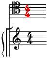
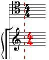
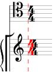
Special Editing With <alt>Parameter n
When in Edit Mode, typing <alt>n (n = any parameter number, hold both keys
down at once) will allow you to increase or decrease the value of that parameter by tapping on the up arrow or down arrow cursor keys. The increment value for the arrow keys is originally set to 1. The increment may be reset at any time by typing INC followed by a number. The parameter number and increment will appear in a box in the upper left area of the screen. This value will determine the action of all editing with the arrow keys.
When using the <alt>n feature the increment may also be changed by hitting the left arrow key or the right arrow key.
This will change the increment by + or - 0.1. To regain the normal function of the arrow keys, type <alt>X.
Special method to clear many parameters at once:
Type a -9999 b, where a is the
first parameter to be
set to zero and b is the last parameter. For example,
7 -9999 12 would set all the parameters 7 through 12
to zero at once. If b is omitted, all parameters from
a up will be zeroed.
At
any time
after you have made changes to an Item and
before you move on to another Item or exit from Edit Mode, you may cancel
the changes by typing AB
or <ctrl>B or clicking on the 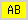
To delete an Item hit the <Delete> key, click on the DEL button, or type DE. After the Item is deleted, the next Item in order, either forward or backward, will come into Edit Mode.
Hitting
either F11 or F12, or clicking on these buttons, 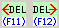
You can recover from an erroneous deletion by typing "UND" or clicking on the undelete button, .
Type
<esc>, X, or click on the X button, or click with
the right mouse button to exit from any form of edit mode. If you type X
n, item number n comes into Edit Mode. 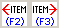
Clicking on these buttons,
Clicking
on these buttons, 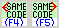
If you type XX, the edit will end in the normal way and the edited item will be saved in the !!CUT0.TMP file. This item may be retrieved at a later date with the PST0 command.
Typing <Enter> will end the edit and move on the the next item.
If after exiting from Edit you realize you meant to type C (copy) instead of X, you may retain the edited Item and restore its original form by clicking on the restore box.
When you move an Item in Edit Mode, the original form remains in place. If you exit from Edit Mode the original disappears. However typing C or clicking on the COPY button will consider the Item in the new position as a copy, exiting from Edit Mode. The original Item will remain in place.
Typing CC (copy, continue) or clicking on the CC button will conclude the copy but continue with the new Item in Edit Mode. Typing CX or clicking on the CX button will conclude the copy and move to the next Item in order after the original Item. Clicking the middle mouse button is the same as typing CC.
VC, VCB, VCS vertical centering
Type VC to center an item between its home staff and the staff above.
VCB centers an item between its home staff and the staff below.
VCS centers an item on the midpoint of the staff.
These commands apply only to Code 4, Code 9, Code 10, Code 16 and Code 18.
Here the Code 4 item is attached to staff 3.
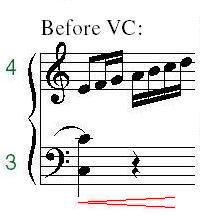 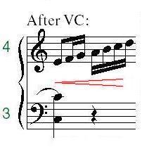
Here the Code 18 item is attached to staff 1.
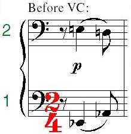 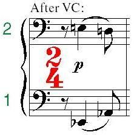
Here the Code 9 item is attached to staff 6.
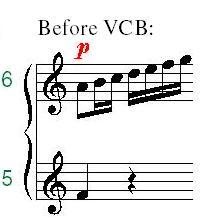 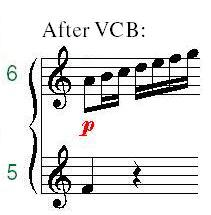
Here the Code 16 item with P4=10 is to be centered on staff 9.
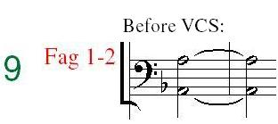 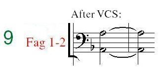
You may zoom (enlarge the display) in or out with the following commands:
<ctrl><Page Up> = zoom up 12.5 %
<ctrl><Page Down> = zoom down 12.5 %
<ctrl>2 = zoom to 200 %
<ctrl>3 = zoom to 300 %
If either of the last two above is repeated, the display zooms back to 100 %.
Also if the screen image is larger than the physical screen size, it may be moved by holding the <ctrl> key while hitting any of the arrow keys. This does the same thing as sliding the scroll bars by means of the mouse. (Some people like to use the mouse as little as possible.)